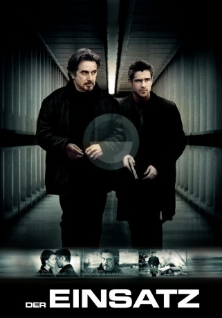

#6800 Der Einsatz
Alternativ: The Recruit
 
 IMDB-Wertung: 6.6 / 10
IMDB-Wertung: 6.6 / 10  Metascore: 0
Metascore: 0 
James Clayton, Spitzenabsolvent einer Elite-Uni und Entwickler einer wegweisenden Computersoftware, wird von CIA-Scout Walter Burke für die “Agency” angeworben. Im Ausbildungslager trifft James auf die geheimnisvolle und attraktive Layla. Völlig unerwartet wird er am Ende der harten Ausbildung wegen Nichteignung entlassen. Kurz danach taucht Burke mit einem undurchsichtigen Auftrag auf: James soll für die CIA einen “Maulwurf” in den eigenen Reihen ausfindig machen. Es beginnt ein gefährliches, atemloses Vexierspiel um Loyalität, Verrat, Gier und Liebe, in dessen Verlauf es nur eine Gewissheit gibt: “Nichts ist, wie es scheint”.
Jahr: 2003
Dauer: 115 Minuten
FSK: 12
Land: USA Studio: Buena Vista PicturesTonspuren: DTS - ,
Untertitel: Deutsch,
Auflösung: 1080p (1920x816) Größe: 6062 MB
Genre: Action, Thriller, Drama, Liebe, Mystery
Regisseur: Roger Donaldson
Drehbuch: Roger Towne
Soundtrack:
Darsteller:
 Al Pacino als Walter Burke
Al Pacino als Walter Burke Colin Farrell als James Douglas Clayton
Colin Farrell als James Douglas Clayton Bridget Moynahan als Layla Moore
Bridget Moynahan als Layla Moore Gabriel Macht als Zack
Gabriel Macht als Zack Kenneth Mitchell als Alan
Kenneth Mitchell als Alan Mike Realba als Ronnie Gibson
Mike Realba als Ronnie Gibson Ron Lea als Bill Rudolph, Dell Rep
Ron Lea als Bill Rudolph, Dell Rep- Jeanie Calleja als Co-Ed #1
- Jenny Cooper als Blonde with Cell Phone
 Angelo Tsarouchas als Cab Driver
Angelo Tsarouchas als Cab Driver Eugene Lipinski als Husky Man
Eugene Lipinski als Husky Man Chris Owens als Art Wallis
Chris Owens als Art Wallis- Jessica Greco als Hot Girl at Blue Ridge
- Sam Kalilieh als Elliot
 Merwin Mondesir als Stan
Merwin Mondesir als Stan Elisa Moolecherry als Lisa Sahadi
Elisa Moolecherry als Lisa Sahadi- Oscar Hsu als Psychiatrist #1
- Arlene Mazerolle als Psychiatrist #2
- Brian Rhodes als Psychiatrist #3
- Jane Moffat als Polygraph Technician
 Steve Lucescu als Farm Instructor #2
Steve Lucescu als Farm Instructor #2 Neil Crone als Farm Instructor #3
Neil Crone als Farm Instructor #3- Scott McCord als Young Instructor #2
 Pamela Fischer als Airline Traveler , uncredited
Pamela Fischer als Airline Traveler , uncredited Rick Kain als Metro Cop , uncredited
Rick Kain als Metro Cop , uncredited- Misty Kelley als Tourist Traveler , uncredited
 Aaron Michael Lacey als Truck Worker , uncredited
Aaron Michael Lacey als Truck Worker , uncredited- Karl Pruner als Dennis Slayne
- Veronica Hurnick als Polygraph Interrogator
- Mark Ellis als Test Instructor
 Richard Fitzpatrick als Rob Stevens
Richard Fitzpatrick als Rob Stevens- John Watson als Guard
- Sheldon Davis als Security Officer #1
- Steve Behal als Exam Procter
- Bart Bedford als Co-Worker
- Tony Craig als Transit Cop
- David Boyce als New Security Guard
- Tova Smith als Beth
- Michael Rubenfeld als Felix
- Domenico Fiore als Farm Instructor #1
- Ray Paisley als Farm Instructor #4
- Janet Bailey als Young Instructor #1
- Shaun Verreault als Band Member #1
- Safwan Javed als Band Member #2
- Earl Pereira als Band Member #3
- Conrad Bergschneider als Firing Range Instructor
- John Wayne Shafer als Langley Gate Guard
- Stephen Lee Wright als Running Instructor
- Enrique Chicas als Baliente Brother / Burrito Vendor , uncredited
- Darrell Hicks als Police Officer , uncredited
Datei: X:\2003(A-F)\Einsatz, Der (2003, FSK12, 1920x816).mkv seit 30.08.2017
Festplatte: HD 2003-2004-2005(A-F)
 Es gibt insgesamt 26 Filme in der Gruppe '2003(A-F)'
Es gibt insgesamt 26 Filme in der Gruppe '2003(A-F)'